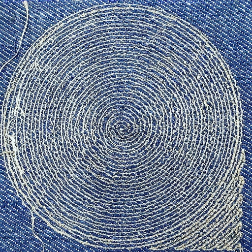
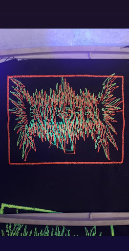
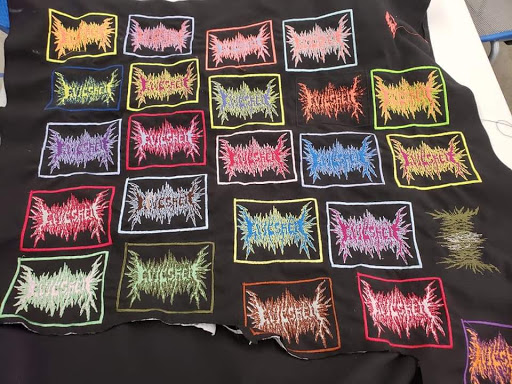
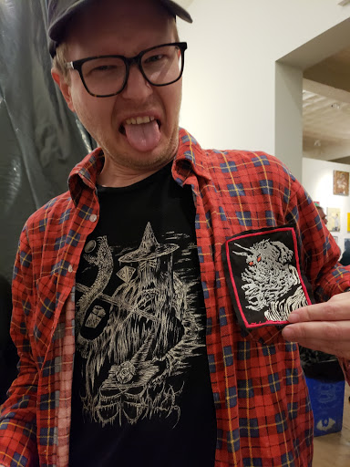

<h3> Machine Embroidery</h3>
</div >
<div class="col-md-9">
<h3> Various Examples</h3>
<li>Here are some examples of what you can do with a Brother machine embroiderer. The first example uses conductive thread in the pattern of a spiral so that the fabric can be used as a speaker. Other examples feature applique and fluorescent thread that glows under UV light.</li><br>
<br><br>
<img width="400" src="./applique.jpg" alt="hydrostone"><br><br>
<br><br>
<img width="400" src="./caveevil.jpg" alt="foodsafe"><br><br>
<img width="400" src="./centaur.jpg" alt="waxrough"><br><br>
<br><br>
<br><br>
<!-- <iframe width="400" height="541" src="./sewing.mp4" frameborder="0" allow="accelerometer; encrypted-media; gyroscope; picture-in-picture" allowfullscreen></iframe>-->
<video width="400" height="541" controls>
<source src="./sewing.mp4" type="video/mp4">
</video>